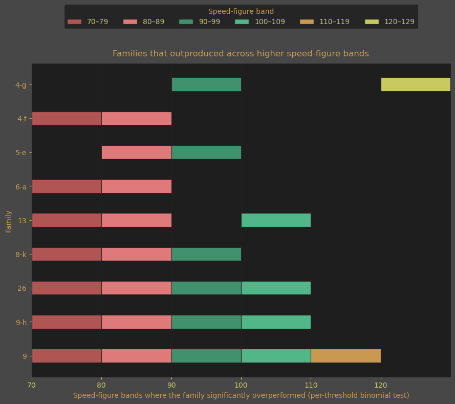

Identifying Female Family Effects
In Thoroughbred breeding, conventional wisdom holds that the dam's female family can influence her foals future racing performance more than her own race record. While the influence of the dam is widely acknowledged, it is rarely measured. In contrast, sire lines are aggressively catalogued, ranked, and marketed. For most thoroughbred racing enthusiasts, female families are more often invoked anecdotally — cited as tradition, intuition or superstition, rather than tested as a statistical signal.
While not widely known, female families have already been catalogued numerically using the Bruce Lowe Family Numbers System. Unfortunately, few public sources take advantage of this system to mathematically measure outcomes. Do these lines highlight families that stand apart? Do faster horses consistently come from certain female lines? Do some female families produce horses that earn money with the talent they inherited?
This paper asks a narrower, more tractable question: whether maternal lineage, as defined by Lowe female family numbers, shifts where a dam's offspring tend to fall along the racing performance spectrum. The focus is on identifying families that consistently shift probabilities, not on assigning absolute labels.
The analysis examines 13,902 starters from the 2021 North American foal crop, using each horse’s highest recorded Equibase Speed Figure as a standardized measure of peak observed ability. All results are conditioned on horses that made it to the racetrack; questions of soundness,trainability, and survivorship prior to first start are explicitly outside the scope of this work.
This is exploratory analysis. The results identify statistically unusual distributions, not causalmechanisms. They do not attempt to separate genetic influence from training, ownership, oropportunity. The objective is more basic: to establish whether female-family effects are detectable at all — and, if so, where along the performance distribution they appear to matter most.
Important: This is exploratory research based on starters from a single foal crop. The correlations I found are a starting point, not a conclusion. Further analysis across multiple years is needed to determine whether these patterns hold — and why certain groups of mares produced these results in this particular crop.
Executive Summary
A small number of female families show statistically unusual performance distributions relative to the overall population, while most behave close to baseline expectations.
Family effects are not uniform across performance levels. Elite outcomes remain rare across all families, but measurable differences emerge below that extreme.
Some families show a higher likelihood of producing horses capable of reaching stakes-adjacent and graded-stakes performance levels, while others produce fewer very low-performing horses than expected.
Conversely, some families produced more low-performing horses than expected, compared to the general population.
Measured talent does not directly correlate to earnings.
These findings reflect shifts in probability rather than guarantees.
The sections that follow describe the data, methods, and limitations underlying these observations and identify which families deviate meaningfully from baseline behavior.
Caveat: This is exploratory research based on a single foal crop. These correlations are a starting point for further investigation, not definitive conclusions.
How These Results Were Calculated
I compared female families to the speed figures of their offspring. Below, I'll explain what these variables mean, their constraints, and how I arrived at the findings above.
Apples to Apples: Performance as a Metric
Comparing racehorses is tricky: a horse grinding out a mile and a half in the slop at Aqueduct isn't running the same race as a sprinter going five furlongs on the turf at Del Mar, or a horse running a mile on the Tampa Bay dirt in February. Different distances, surfaces, track conditions, and even track configurations make raw times meaningless for comparison.
Equibase® Speed figures solve this problem. They normalize performance across all these variables, producing a single number that lets you compare any horse to any other horse, regardless of where or how they ran. Horses races are categorized by the speed figure typically required to win them. Below is a breakdown of winning speed figures for each level.
A horse with a speed figure of 110 has, on at least one occasion, performed at a level consistent with top-tier graded stakes competition. This threshold is not about consistency or career average; it reflects the ability to reach the highest level of performance, even if only briefly.
Grade I Stakes
- Speed Figures 110+
- Elite perfomers
- < 1% of total population
Grade II, Grade III
- Speed Figures > 100
- < 7% of total population
Allowance/Minor Stakes
- 70 > Speed Figures < 100
- Most Realistic Chance for an Owner
- over 35% of the population
Claiming
- Speed Figure < 70
- Higher priced claimers float between this class and allowance
- More profitable for the DIY Owner/Trainer
What is a Family Number?
The Bruce Lowe System
If you've spent time around Thoroughbred pedigrees, you've seen names like "Family 1-a" or "Family 10-d" — but what do they mean?
In the 1890s, Australian researcher Bruce Lowe traced every Thoroughbred back to the foundation mares of the breed. He numbered these maternal lines 1 through 43 based on how many Epsom Derby and Oaks winners each had produced — Family 1 had the most classic winners, Family 43 the fewest.
Over time, families branched. When a branch's production quality began to stand out among others in its family, it got a letter suffix: 1-a, 1-b, 1-c, and so on. Some families have split dozens of times.
Today, these numbers no longer serve as rankings — racing conditions have changed dramatically since their inception. However, their usefulness to identify trends among female lines remains.
Key point: A lower family number doesn't mean "better" today. The rankings reflect 19th-century English stamina racing, not modern American speed. Family 10-d might outperform Family 1-a on today's tracks.
Where to Find Family Numbers
If you want to look up a horse's female family, Pedigree Query is essentially the only public source. Search for any Thoroughbred and the family number appears in the pedigree details. It's not something you'll find on Equibase or most racing databases.
A note on methodology: Family numbers in this analysis are sourced from Pedigree Query. These represent maternal lineage groupings — horses sharing the same tail-female line. Whether the numeric labels precisely match the original Bruce Lowe classifications is unverified, but doesn't affect the analysis: the groupings themselves are consistent and based on accurate pedigree data.
The system is imperfect and historical, but it gives us a way to group horses by maternal lineage and ask: do these groupings predict anything?
What We're Measuring — The Horses Who Made It
Before diving further, it's important to understand what this analysis captures — and what it doesn't.
A speed figure measures raw observable ability — how fast a horse ran in an actual race. Earnings are a reflection of a horse's ability to sustain talent through multiple races without injury or illness. But getting to that race requires clearing a series of hurdles before these trait can be expressed:
- Trainability — can the horse learn to break safely from a starting gate?
- Temperament — can the horse handle the stress of varying environments, people and other horses?
- Soundness — can it stay healthy enough to make it to the starting gate?
- Desire — does the horse enjoy running?
Every horse in this dataset cleared those bars. The ones who didn't — the untrainable, the unsound, the ones who never made it to a race — aren't here. We're comparing horses that were all "good enough" to compete, and asking which of their families stood out amongst them.
What Does the Entire Population Look Like?
In order to determine which families are exceptional, we must first identify what is normal. Below is a graph showing the distribution of speed figures across all families in the dataset.

From this graph we can see that roughly seven out of ten starters in the 2021 crop never moved beyond claiming-level performance. At the time of this writing these horses are about to turn 6 years old and will have made the highest speed rating they will ever achieve. Graded Stakes horses live in the far right tail of this distribution and many have finished their career at this point.
This distribution represents a largely final accounting of performance outcomes for the crop-- a reference point for all subsequent tests, allowing us to distinguish random variation from systematic overperformance.
Comparing Apples to Oranges
The female families in this population of starters are not evenly distributed. There are females families represented by as many as 400 starters in this crop, as well as families with as few as 3. So if a female family produced 7 Grade I winners in a single crop, was this due to more starters and therefore more chances?
Alternatively, if a female family only had 30 starters but produced only one Grade I Winner, is that a sign of an achievement or an expected outcome? Statistics has a tool to evaluate this scenario called the binomial test. Using this test we can determine what is "normal" given total foals started from this family.
Focusing the Lens
In Search of Raw Talent
I was searching for female families that exceeded population expectations as performance thresholds rise or fall. To find the success stories, I evaluated outcomes at 10-point speed-figure intervals, spanning allowance through graded-stakes levels. I also examined the opposite end of the distribution, identifying families that underperform by contributing a disproportionate share of horses unable to compete even at the claiming level.
Which families produce more competitive horses than we would expect by chance, given how many horses they actually ran?
For each speed-figure cutoff (70, 80, 90, 100, 110, 120), I calculated the population rate of horses reaching that level and then tested whether each family produced more horses than expected given its number of starters using a one-sided binomial test.
Families with fewer than 30 starters were excluded to reduce noise and false positives.
| Family | Thresholds Hit | Strongest p-value | Speed Levels |
|---|---|---|---|
| 9 | 5 | 0.0053 | 70, 80, 90, 100, 110 |
| 26 | 4 | 0.0020 | 70, 80, 90, 100 |
| 9-h | 4 | 0.0009 | 70, 80, 90, 100 |
| 8-k | 3 | 0.0001 | 70, 80, 90 |
| 13 | 3 | 0.0127 | 70, 80, 100 |
| 6-a | 2 | 0.0144 | 70, 80 |
| 4-f | 2 | 0.0244 | 70, 80 |
| 5-e | 2 | 0.0230 | 80, 90 |
| 4-g | 2 | 0.0306 | 90, 120 |
Which Families Stand Out?
The trends among these families requires something systematic rather than the result of random variation. These clusters of horses have proved mathematically they literally stand out from the herd.
Top Performers
Family 9 stands out as a family who's starter's talents beats the population baseline consistently across all levels. The other families in the table also outperformed if but for few speed figure ranges. The chart below provides visualization of where each family excelled.

Low Performers
Baseline low-performer rate (SF < 50) in this dataset: 15.44%.
There are a handful of families viewed below that put more horses on the bottom of this distribution than was expected. Most families — even those with impressive individual runners — behave much like the average when viewed across many starters. However, the starters from these families displayed lower speed figures among this crop.
| Family | Thresholds Hit | Hit Thresholds |
|---|---|---|
| 11-c | 4 | [10, 20, 30, 40] |
| 21-a | 4 | [10, 20, 30, 40] |
| 4-d | 2 | [20, 30] |
| 14-b | 2 | [30, 40] |
| 4-m | 2 | [50, 60] |
| 16-h | 2 | [10, 20] |
Again, I've created a visual representation of the data in the table for the low performance families. The table represents overrepresentation of low-performance horses for these families.

These families do not merely produce the occasional slow horse; they repeatedly place more runners than expected into the lowest speed-figure bands, even after accounting for overall population rates.
The pattern is clearest for families 11-c and 21-a, which over-represented the bottom of the distribution across four separate thresholds, from single-digit speed figures through the sub-40 range, indicating a systematic tendency toward low performance rather than random variance.
Other families show narrower but still meaningful effects: 4-d and 14-b concentrate excess runners in the 20–40 range, while 16-h skews toward very low outcomes despite fewer hit thresholds, and 4-m underperforms primarily in the 50–60 band, suggesting mediocrity rather than extreme weakness.
This analysis does not claim these families never produce quality horses; it shows that, on average and across many starters, they contribute disproportionately to the lower tail of the performance distribution for this crop.
In practical terms, these families represent negative expectation risk: even when an individual appears viable on paper, the family background increases the likelihood of a sub-par outcome relative to the population baseline.
This is exploratory work. The correlations are real. The causes remain open questions.
Interim Summary: Speed Production
Some female families have genuinely put more faster horses on the track for this crop. Further research is required to determine what conditions produced these results and if these results have been repeated.
This analysis identifies female families that shifted the odds across an entire cohort rather than producing isolated standout individuals. The probability that these patterns emerged by chance alone across multiple performance thresholds is low.
Importantly, this does not establish a genetic cause. Nor does it rule out the influence of management, opportunity, or investment. What it does show is that horses sharing the same female-lineage did not simply get lucky once or twice. They produced talented runners often enough that randomness alone is not a convincing explanation.
The next section extends this analysis by conditioning on outcomes that require soundess and longevity. Instead of asking only which families produced talent, it asks a harder question: which families convert speed into money?
The Money Makers
In the previous section, Family 9 appeared to lead the field in producing raw talent. However, while a horse can demonstrate ability, that ability must be sustained through soundness and continued competition for speed to translate into earnings. In this section, we examine how earnings are distributed across speed ratings and ask a more practical question: at what levels of speed do different families actually make money?
Speed figures can't tell us which horses can endure — the ones who stay sound enough to race repeatedly and earn money for their owners over a career. A horse might flash elite speed once and never race again. Conformation flaws, maintenance requirements, and durability all affect whether talent translates to earnings.
Horse racing offers no guarantees, but for owners without unlimited resources, sustained winnings and purse earnings are the only way a stable remains viable. Graded stakes horses represent roughly 5% of the population, so most stables cannot rely on elite performers to keep the lights on. Instead, it is durable horses with genuine ability that pay the bills. The goal of this analysis is to identify which female families consistently produce horses that earn the most money, and to determine the level of racing at which that success is realized.
My Take Aways: What the Data Reveals
The Winners
After analyzing the data, several female families stood out for consistently producing faster horses than expected by chance. Here are the key findings:
🏆 Family 9
- The Complete Package
- The only family to hit all five thresholds — from allowance to Grade I Stakes caliber.
Family 26
- Produced more than expected runners in speed figures up to Grade II and Grade III.
- Consistent from allowance to lower graded stakes.
Families 8-k, 6-a, 4-f, 5-e, 13
- Allowance Specialists
- Reliable at 70-90 that fade at graded stakes level.
Families That Underperformed
Female families can also show statistically meaningful correlations with negative outcomes. In this crop, a small number of families placed significantly more horses into the lowest speed-figure bands than expected by chance. Most families—even those with impressive individual runners—track closely with the population average when viewed across many starters. These families did not.
Family 4m
- Mid-level underperformance
- Produced significantly more horses in the 50–60 speed-figure range than expected, suggesting a tendency toward middling outcomes rather than extreme lows.
Family 11-c
- Persistent low-end concentration
- Overrepresented the bottom of the performance distribution across four thresholds, from single-digit speed figures through the sub-40 range.
Family 21-a
- Consistent low-performance skew
- Placed significantly more horses than expected into the lowest speed-figure bands, mirroring the deep tail pattern seen in Family 11-c.
Families 4-d, 14-b, 16-h
- Localized low-end underperformance
- Showed statistically meaningful excesses in specific low speed-figure bands, indicating targeted weakness rather than broad population-average behavior.
Glossary
binomial test: A statistical test used to determine whether the number of observed successes in a group differs significantly from what would be expected under a known baseline probability. In this analysis, it is used to ask whether a female family produced more (or fewer) horses above a given speed-figure threshold than would be expected based on the population-wide rate, after accounting for the number of starters in that family.
Starters: Horses that have officially entered and run in at least one race. This excludes horses that were bred but never made it to the track due to injury, lack of ability, or other reasons.
Stakes: The highest level of horse racing. Owners must pay a "stake" to enter their horse. Stakes races offer larger purses and attract the best horses. Graded stakes (Grade 1, 2, 3) are the most prestigious, with Grade 1 races like the Kentucky Derby at the top.
Equibase Speed Figures: A numerical rating that measures how fast a horse ran in a race, adjusted for track conditions and distance. Higher numbers mean faster performances. A figure of 100+ is excellent, 90+ is above average, and below 70 is poor. Equibase is the official data provider for North American horse racing.
Claiming races: The lowest level of horse racing. Every horse in the race is for sale at a set price. Trainers use these races to find the right level for their horses. Speed figures typically range from 70–80.
Allowance races: Mid-level races where horses are not for sale. Horses compete based on conditions like age or past earnings. A step up from claiming. Speed figures typically range from 90–100.
Graded stakes: The highest level of racing. Graded stakes are ranked Grade 1 (most prestigious), Grade 2, and Grade 3. The Kentucky Derby, Preakness, and Belmont are all Grade 1 races. Speed figures of 110+ indicate graded stakes caliber.
Minor stakes: Stakes races that have not been assigned a grade. Also called "non-graded stakes" or "listed stakes." They offer smaller purses than graded stakes but are a step above allowance races. Winning a minor stakes race earns a horse "black type" — bold print in sales catalogs that signals quality.
Sound: A horse that is healthy and free from injury or lameness. A sound horse can train and race without physical issues. Many horses bred never make it to the track because they don't stay sound.
Grade 1 (G1): The highest level of stakes racing. These races feature the best horses competing for the largest purses. Examples include the Kentucky Derby, Breeders' Cup Classic, and Belmont Stakes. Winning a Grade 1 significantly increases a horse's value as a breeding prospect.
Grade 2 (G2): High-quality stakes races one tier below Grade 1. These races attract top horses but typically offer smaller purses and less prestige than G1 events. Horses often use G2 races as prep races for Grade 1 targets.
Grade 3 (G3): The entry level of graded stakes racing. While less prestigious than G1 or G2, winning a Grade 3 still marks a horse as above-average and earns "graded black type" in sales catalogs — a sign of quality that increases breeding value.